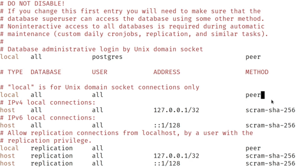
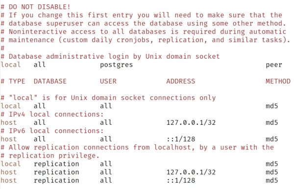
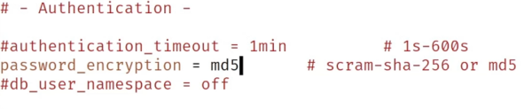
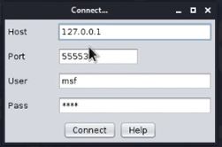
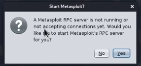
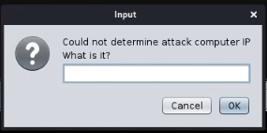
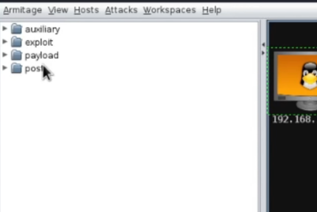
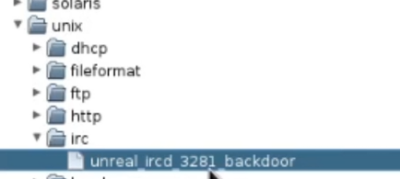
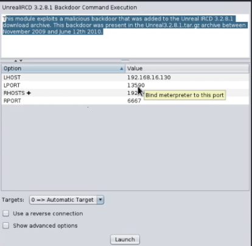
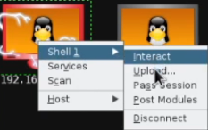

sudo apt install armitage
Ejecutamos el postgresql:
sudo service postgresql start
armitage
Si da error de postgresql:
sudo emacs /etc/postgresql/14/main/pg_hba.conf

Modificamos el método de autenticación.

sudo emacs /etc/postgresql/14/main/postgresqpl.conf

Reiniciamos servicio:
sudo service postgresql restart
Resetear la base de datos de metasploit:
sudo msfdb -f
sudo msfdb delete
sudo msfdb init
Iniciamos armitage:
armitage

Dejamos por defecto

Si

Indicamos nuestra ip de la máquina Kali.
Para lanzar exploits:


Podemos configurar

Una vez comprometido el icono se ve así
Para abrir la sesión
